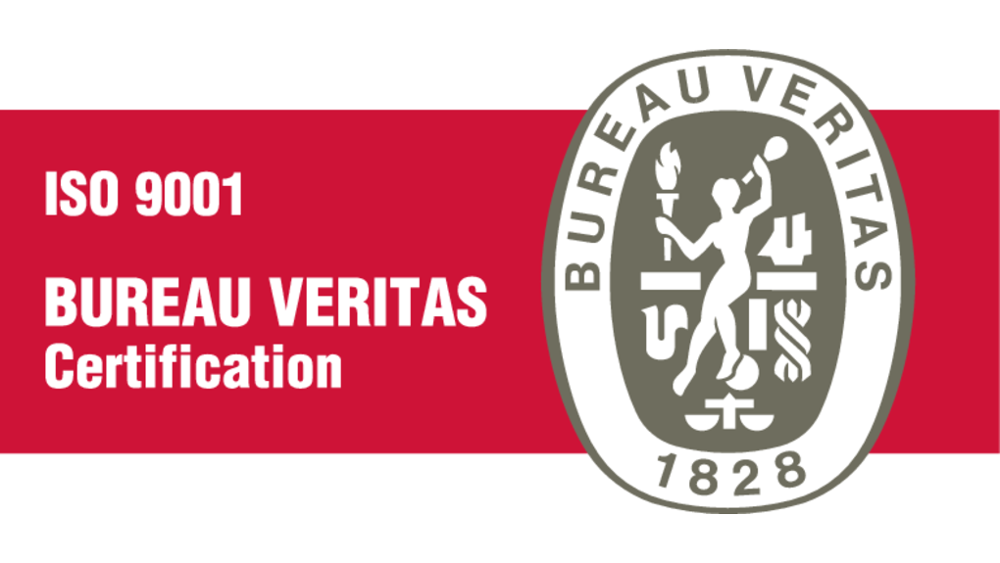
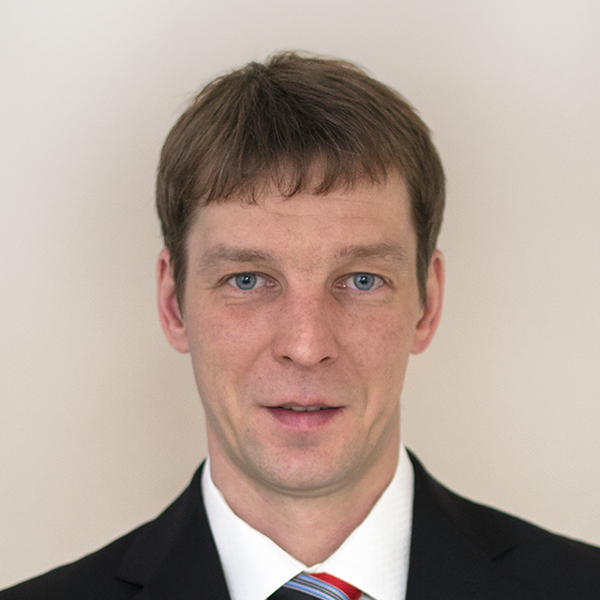
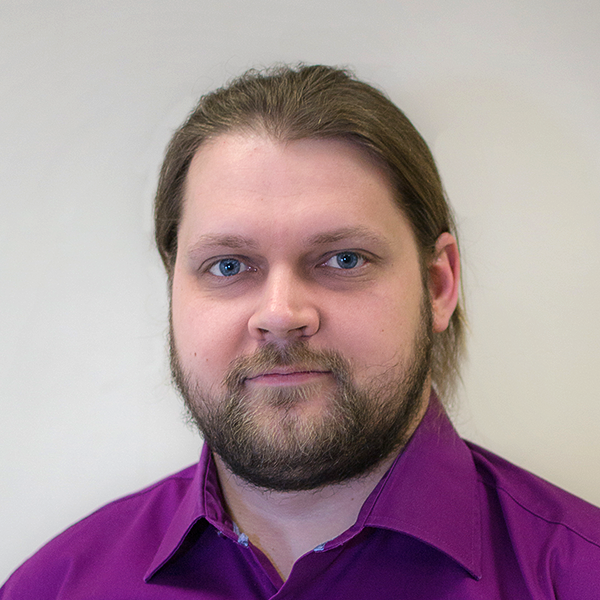
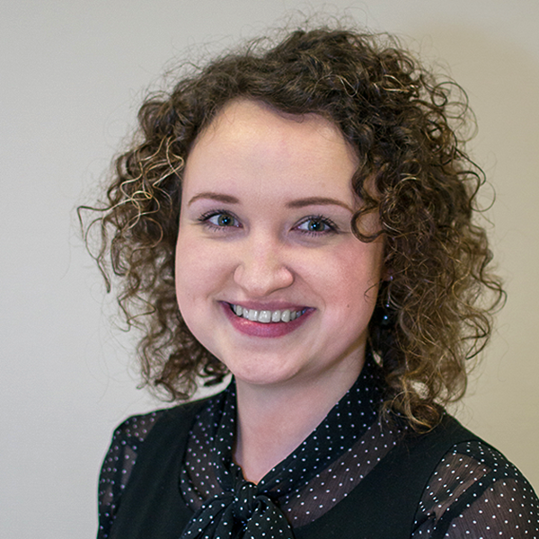
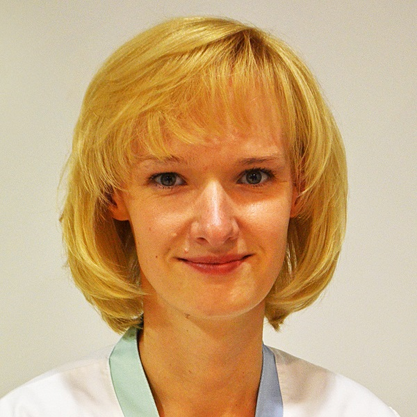

Mūsu vīzija – palīdzēt uzlabot dzīves kvalitāti pacientiem, kuri ar savu enerģiju un entuziasmu, izturību un iekšējo spēku ir gatavi atklāt jaunas dzīves iespējas.
Tehniskās ortopēdijas uzņēmums
DDA Orthopaedics nodarbojas ar dažāda veida ekstremitāšu protēžu un ortožu izgatavošanu, pielāgošanu, kā arī pacientu apmācību.
Savā darbībā mēs atšķiramies ne tikai ar kvalitāti, bet arī ar pozitīvu attieksmi pret pacientiem, kolēģiem un sadarbības partneriem. Mēs cenšamies būt inovatīvi un piedāvāt risinājumus katram pacientam, kas būtiski paplašina iespējas funkcionalitātes atgūšanā un nostiprināšanā maksimāli īsā laika posmā.
Uzņēmuma
DDA Orthopaedics sadarbība ar vadošajiem Latvijas speciālistiem dažādās nozarēs ļauj piedāvāt pacientam labāko risinājumu un tuvināties mērķim - dzīvot pilnvērtīgu dzīvi.
Mūsu uzņēmums izsaka pateicību saviem pacientiem, darbiniekiem un sadarbības partneriem par izrādīto uzticību un doto iespēju būt kopā ar jums.
Atbilstam ISO 9001:2015 kvalitātes vadības sistēmas standartam.
Kārlis Lācis
SIA DDA Orthopaedics valdes priekšsēdētājs


Kārlis Lācis
SIA DDA Orthopaedics valdes priekšsēdētājs
Sertificēts tehniskais ortopēds
Rīgas Stradiņa universitātes pasniedzējs
Protezēšanas, ortozēšanas un tehniskās ortopēdijas asociācijas dibinātājs
ISPO - International Society for prosthetics and orthotics biedrs
Sertificēts C-Leg / C-Leg 4 eksperts
Sertificēts DVS sistēmās zemceļa protēžu čaulu izgatavošanā
Sertificēts mioelektrisko rokas protēžu izgatavošanā

Guntis Raipalis
SIA DDA Orthopaedics valdes loceklis
Sertificēts tehniskais ortopēds
Rīgas Stradiņa universitātes pasniedzējs
Protezēšanas, ortozēšanas un tehniskās ortopēdijas asociācijas valdes loceklis
ISPO - International Society for prosthetics and orthotics biedrs
Sertificēts C-Leg / C-Leg 4 eksperts
Sertificēts DVS sistēmās zemceļa protēžu čaulu izgatavošanā
Sertifikāts MAS tipa čaulu izgatavošanā

Anda Blūma
Sertificēts tehniskais ortopēds
Rīgas Stradiņa universitātes pasniedzēja
Protezēšanas, ortozēšanas un tehniskās ortopēdijas asociācijas biedrs

Baiba Smilškalne
Fizikālās un rehabilitācijas medicīnas ārsts
Osteopāts
Solvita Bogdanoviča
Sertificēts tehniskais ortopēds
Protezēšanas, ortozēšanas un tehniskās ortopēdijas asociācijas biedrs
Specializējas cieto un mīksto ortožu izgatavošanā
Tīna Krūmiņa
Tehniskais ortopēds
Protezēšanas, ortozēšanas un tehniskās ortopēdijas asociācijas biedrs
Specializējas mīksto ortožu izgatavošanā
Cenas
| Tehniskā ortopēda konsultācija: | 20.00 EUR |
|
| Rehabilitācijas ārsta konsultācija: | 25.00 EUR |
Individuālo izstrādājumu cenas
Individuāli izgatavotajiem tehniskajiem palīglīdzekļiem pakalpojuma cena tiek noteikta katram gadījumam atsevišķi, ņemot vērā izstrādājuma veidu, izmantotos materiālus un sarežģītības pakāpi.
Lai uzzinātu sīkāku informāciju, lūgums zvanīt pa tālruni 29457868.
Saņemot tehniskos palīglīdzekļus par valsts budžeta līdzekļiem maksājama vienreizēja valsts nodeva:
| Personas līdz 18 gadiem | 1,42 EUR |
|
| Personas vecākas par 18 gadiem | 7,11 EUR |
|
No vienreizējās iemaksas, uzrādot attiecīgu izziņu, ir atbrīvota:
- trūcīga persona;
- persona, kura atrodas ilgstošas sociālās aprūpes un sociālās rehabilitācijas institūcijā;
- persona, kuras dzīvesvieta reģistrēta stacionārā ārstniecības iestādē;
- persona, kura izcieš sodu brīvības atņemšanas vietā.
Par tehnisko palīglīdzekļu pakalpojumu saņemšanu iespējams norēķināties tikai SKAIDRĀ NAUDĀ vai ar
BANKAS PĀRSKAITĪJUMU.
Pakalpojumi
- augšējo un apakšējo ekstremitāšu protezēšana;
- augšējo un apakšējo ekstremitāšu cieto un mīksto ortožu izgatavošana;
- augšstilba modulārās protēzes ar elektroniskajām ceļa locītavām C-Leg / C-Leg 4, pacientiem ar augstu aktivitātes līmeni.
- ķermeņa ortožu izgatavošana;
- pacientiem pēc apdegumiem rehabilitācijas periodā – rētu profilaksei – kompresijas apģērbs;
- tehniskā ortopēda konsultācijas;
- rehabilitācijas ārsta konsultācijas.
Tehniskos palīglīdzekļus iespējams saņemt par valsts budžeta līdzekļiem. Šo saņemšanas kārtību regulē VSIA „Nacionālais rehabilitācijas centrs Vaivari” Tehnisko palīglīdzekļu centrs.
Nepieciešamie dokumenti:
Iesniegums tehniskā palīglīdzekļa piešķiršanai un
Atzinums tehniskā palīglīdzekļa saņemšanai.
Sīkāka informācija atrodama
VSIA „NRC Vaivari” mājas lapā.